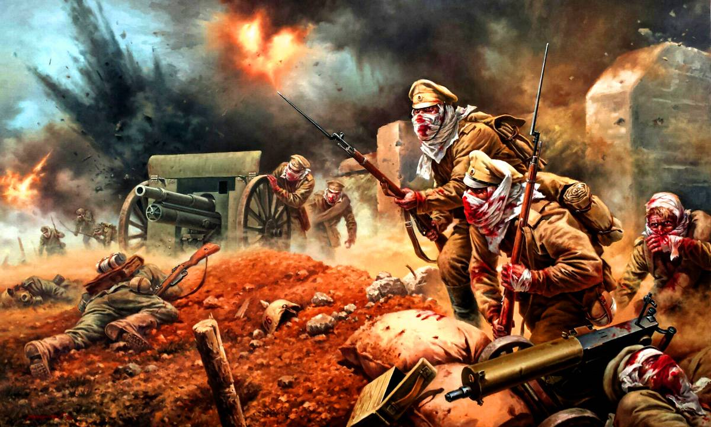

Cuadro que recrea a los soldados rusos luchando contra los alemanes después de un ataque químico. Evgeny Ponomarev.
Batalla de los Hombres Muertos
La Batalla de los Hombres Muertos, librada en la fortaleza de Osovets en agosto de 1915, permanece como uno de los episodios más sobrecogedores de la Primera Guerra Mundial. Ante la feroz resistencia rusa, el ejército alemán desató un ataque con gas cloro, una arma diseñada para aniquilar sin piedad. La nube tóxica causó estragos en las filas defensoras, diezmándolas y dejando a los supervivientes con los pulmones destrozados y tosiendo sangre.
Sin embargo, lo que sucedió a continuación se convertiría en leyenda. De entre la niebla verdosa y los vapores mortales, un grupo de soldados rusos, con sus uniformes hechos jirones y los rostros desfigurados por el veneno, se alzó para un contraataque desesperado. La visión de estos "hombres muertos" avanzando con una determinación fantasmagórica causó tal terror en las líneas alemanas, que creían imposible cualquier resistencia, que el pánico se apoderó de los atacantes y terminaron por huir. Aunque la fortaleza fue evacuada poco después, este acto de valor sobrehumano frente al horror químico quedó grabado para siempre en la memoria de la Gran Guerra.
La mañana del ataque los alemanes se prepararon meticulosamente. Tras más de un año de asedió en el que habían intentado de todo (incluso el bombardeo a la fortaleza con el cañón Big Berta, un cañon de 420 mm) se decidieron a utilizar gas. Esperaron a que soplara un viento favorable y desplegaron 30 baterías de artillería con 14.000 proyectiles de gas cloro. La nube tóxica tenía unos 6-8 km de ancho y penetró hasta 20 km en las líneas rusas, matando a toda la vegetación y envenenando las aguas.
Tras un casi un año de asedio, el Imperio Alemán no había conseguido romper las líneas rusas hasta el uso de la guerra química.
| País | Fuerzas desplegadas | Bajas |
|---|---|---|
| Imperio ruso | 900 | ~800 entre muertos y heridos |
| Imperio Alemán | 7.000 - 8.000 | Desconocidas |
La última batalla
Tras el fatídico ataque químico el ejército ruso del Tzar sabían que estaban acabados. Los efectos de la guerra química se habían esparcido a lo largo del frente y los rusos no estaban preparados para un ataque de esa magnitud: No tenían ningún tipo de protección. El contraataque fue liderado por el Subteniente Vladimir Karpovich Kotlinsky. A pesar de haber inhalado gas, logró reunir a los supervivientes de varias compañías (se estima que entre 60 y 100 hombres) y los condujo al ataque. El ejército ruso se vio diezmado y a las puertas de la muerte y, ese a todo ello, sacaron fuerzas y contraatacaron a un confiado ejército alemán que tenía por segura su victoria y aniquilazión gracias a un ataque químico para el que sus enemigos no estaban preparados.
La imagen de esos soldados, con los rostros cubiertos por trapos ensangrentados, avanzando entre la niebla verde mientras tosían y escupían sangre, fue tan impactante que un soldado alemán describió la escena como si "los muertos se hubieran levantado para un último ataque". El pánico fue absoluto y, pese a superarlos en número por cientos, los alemanes entraron en pánico. El contraataque ruso no fue solo simbólico. Se llegó al combate cuerpo a cuerpo y los rusos lograron recuperar las primeras líneas de trincheras que los alemanes habían tomado. Kotlinsky murió heroicamente en la acción, pero su segundo al mando, el Subteniente Strzeminski, continuó la lucha hasta que también cayó herido.
Es como si los muertos se hubieran levantado para un último ataque.
La batalla de los Hombres Muertos se conviritó en un hito nacional y dio la vuelta a lo que hubiese sido una clara derrota. A pesar de esta heroica defensa, el alto mando ruso, debido a la situación general del frente, ordenó la evacuación completa de la fortaleza el 18 de agosto de 1915. Los rusos volaron las fortificaciones restantes y se retiraron en orden. Por lo tanto, técnicamente, la batalla fue una victoria táctica rusa (rechazaron el asalto), pero una victoria estratégica alemana (la fortaleza fue abandonada). La Batalla de los Hombres Muertos se convirtió en un poderoso símbolo de la resistencia del soldado ruso y en una muestra temprana de los horrores de la guerra química. Es un recordatorio de hasta dónde puede llegar el espíritu humano incluso en las circunstancias más inhumanas.